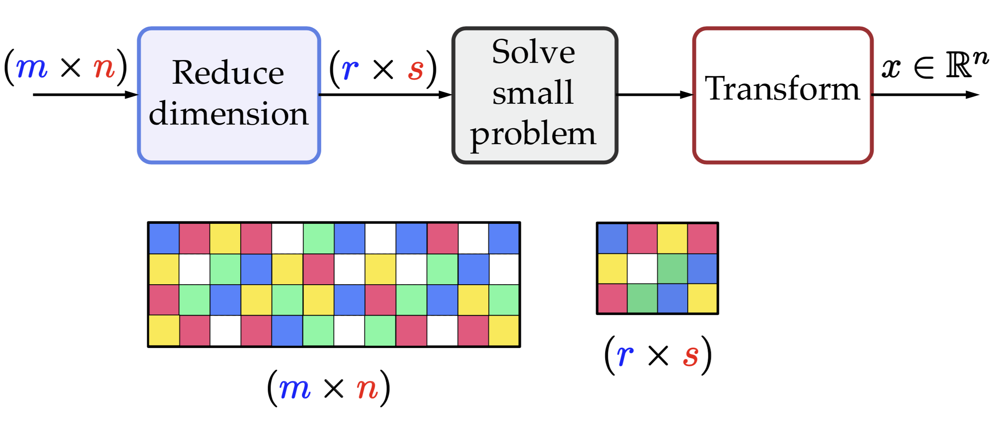
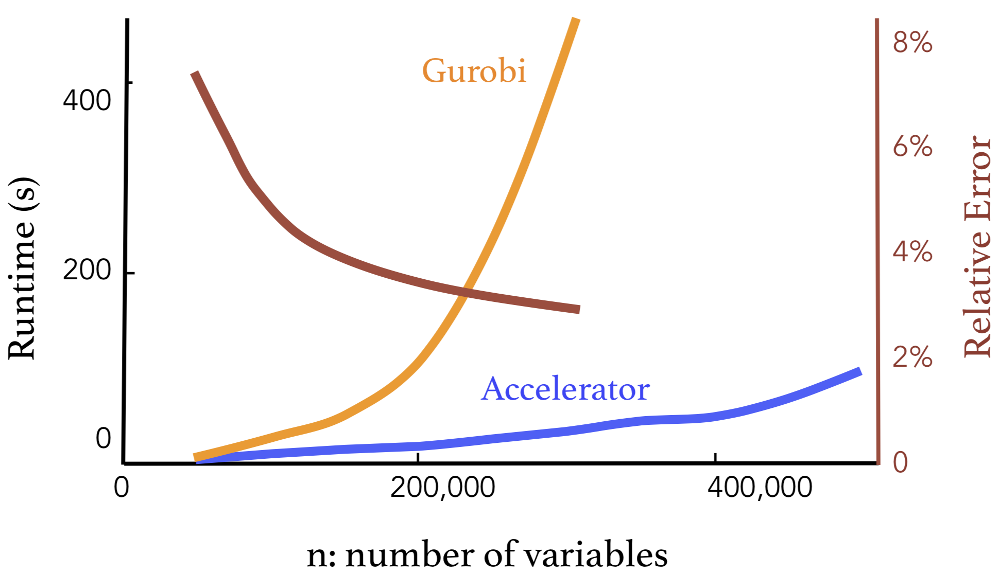
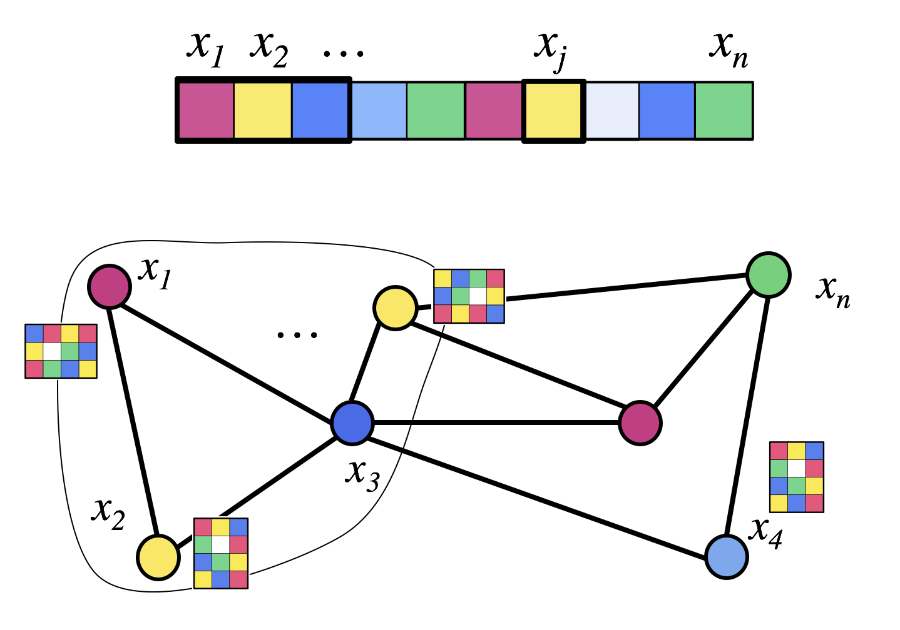
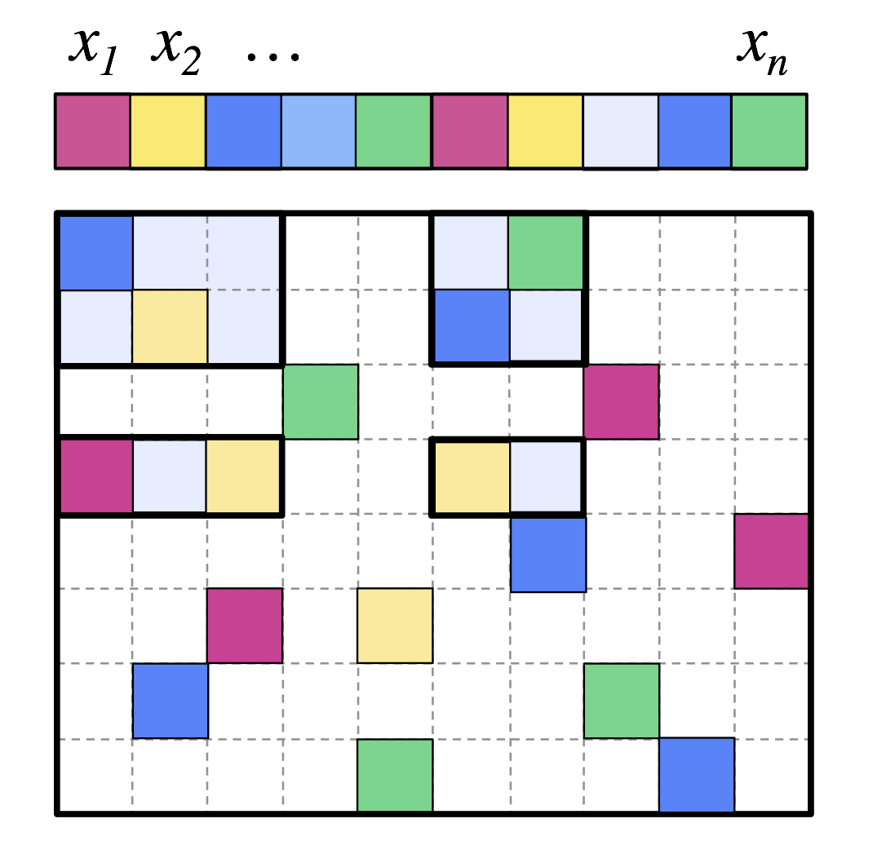
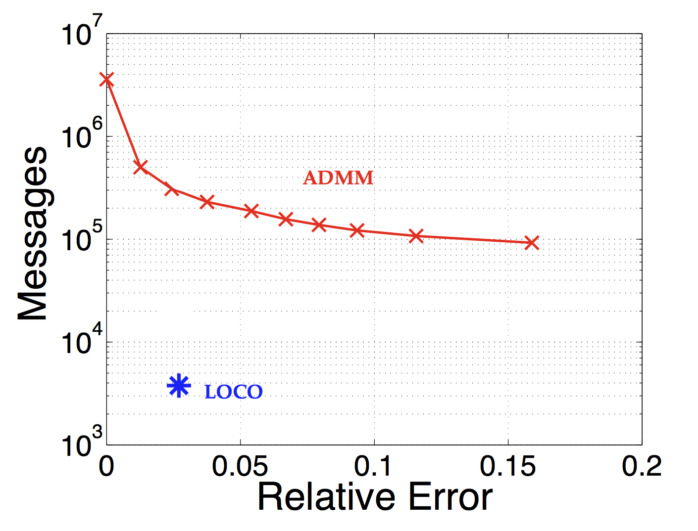
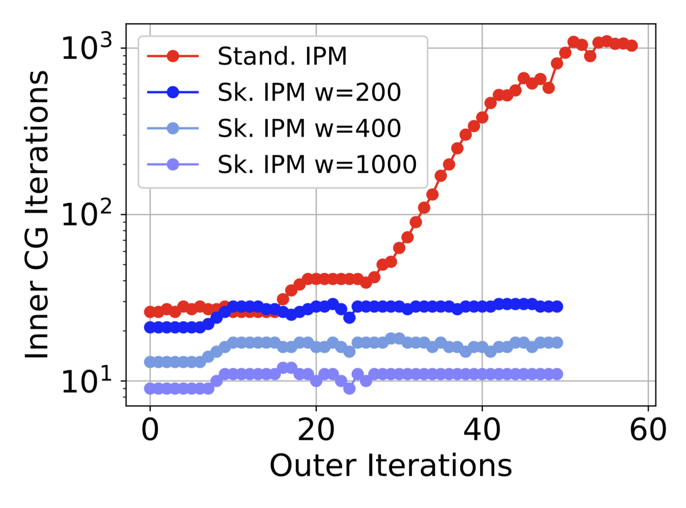

|
Palma London
Ph.D. in Computer Science at Caltech
|
|
Biography
I am a Postdoctoral Researcher at UCSD in the Halicioglu Data Science Institute and the
TILOS NSF AI Institute.
Research Interests
My research broadly spans mathematical optimization and distributed algorithms. I use tools from randomized linear algebra and convex optimization theory to develop novel optimization algorithms that are amenable to distributed and parallelized computation.
A Parallelizable Acceleration Framework for Packing Linear Programs


Logarithmic Communication for Distributed Optimization in Multi-Agent Systems



Speeding up Linear Programming using Randomized Linear Algebra

Education
Ph.D. Computer Science, Caltech, 2020
Black-Box Acceleration of Monotone Convex Program Solvers
Faster Randomized Interior Point Methods for Tall/Wide Linear Programs
Frameworks for High Dimensional Convex Optimization
Speeding up Linear Programming using Randomized Linear Algebra
Logarithmic Communication for Distributed Optimization in Multi-Agent Systems
A Parallelizable Acceleration Framework for Packing Linear Programs
Datum: Managing Data Purchasing and Data Placement in a Geo-Distributed Data Market
Distributed optimization via local computation algorithms
Joint Data Purchasing and Data Placement in a Geo-Distributed Data Market
Learning Graphical Models with Hubs
Node-Based Learning of Multiple Gaussian Graphical Models
TRIPODS Postdoctoral Fellowship, 2020 - 2021
Contact: plondon (at) caltech (dot) edu
|